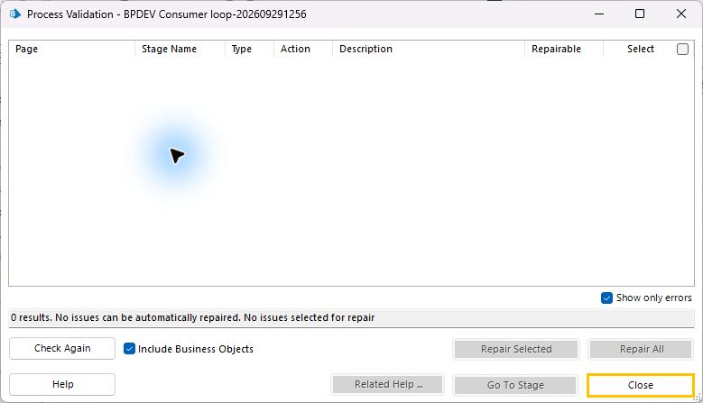

Objets et processus générés par le MCP, exécutés dans Blue Prism 7.5.1 avec l’extension Chrome
officielle. Le processus finalise chaque item et poursuit la boucle après une exception.
Relecture des événements enregistrés
Extrait du journal natif réel, lecture accélérée. Ceci est une relecture de logs, pas
une vidéo du navigateur.
Prêt
Le résultat est vérifié hors du robot
Le site compte une seule soumission par item. Le refus métier ne crée aucun
enregistrement. La confirmation illisible laisse un enregistrement unique et une System
Exception, sans rejeu. L’item suivant réussit.
L’export natif confirme 2 Completed, 2 Exception et aucun verrou. Les cinq assertions du
processus passent.

Template originale de 14 pages. Waits bornés, XPath dynamiques, finalisation séparée du
bloc de travail.